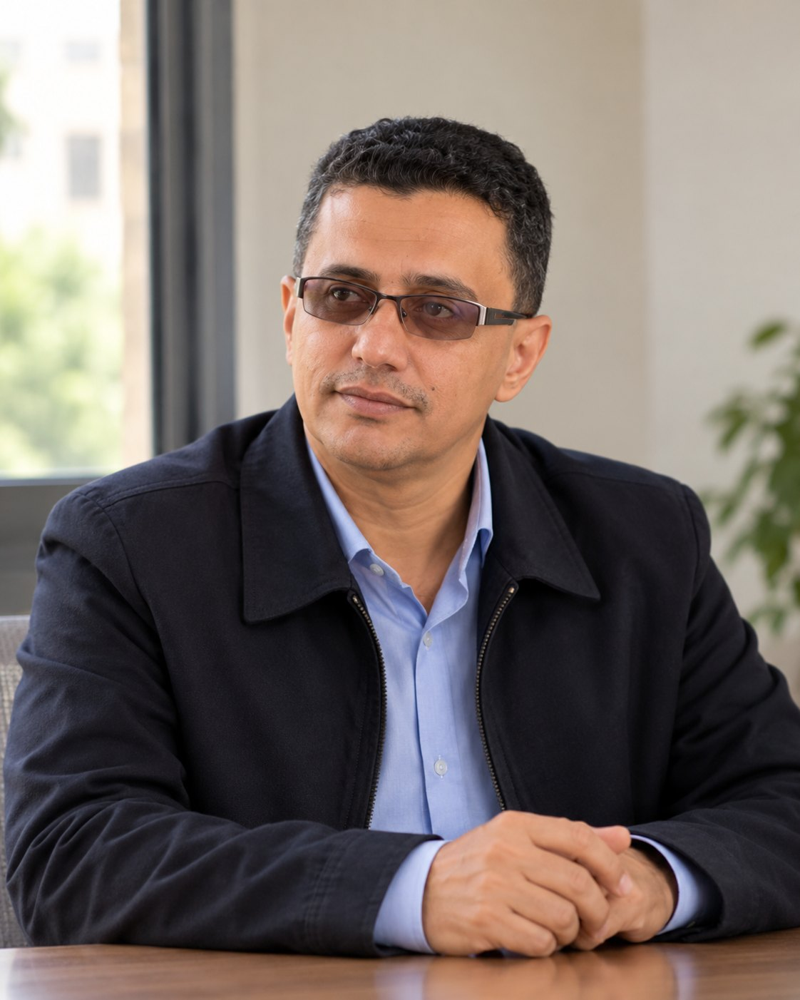

أحمد الزبيريمستشار في الإدارة والحوكمة والعمل الإنساني والتنمية
أمام الناس الذين تخدمهم، وأمام نفسها. أعمل مع الوزارات والمنظمات والشركات، وأبدأ دائماً بالاستماع.

النص على طرف البداية، والصورة على طرف النهاية، وبجانبها سجل الأرقام بهدوء (هذه هي «الإحصاءات السريعة» حين تُعرض مع الافتتاح). لا عنوان في المنتصف، ولا إطار حول الصورة، ولا عدّاد متحرك. على الجوال: الاسم، ثم الجملة، ثم الصورة بعرض كامل، ثم الزران، ثم السجل.